|
Ritorna all'indice delle parrocchie
Il numero abbinato ad ogni famiglia indica la relativa posizione nello Stato delle Anime
1 - Prete Giuseppe Morelli - Paroco di questa Parrocchia
2 - Manenti M. Angiola (il figlio Stefano è proprietario di alcune terre mezzaiolo e fattore - 12
3 - Fontani Bastiani - mezzaiolo e attende al podere
4 - Tempini Giuseppe - lavorante di terreni va a opera
5 - Pestelli Domenico - mezzaiolo e attende al podere
6 - Mariottini Virgilio - lavorante di terreni va a opera
7 - Petrilli Bartolommeo - mezzaiolo attende al podere 19
8 - Maestrini Giovanni - mezzaiolo e fa il vetturale per una parte dell'anno attende al podere e sindaco della comunità
9 - Fineschi Michele - mezzaiolo e attende al podere
9 - Cristofani Giuseppe - (vive nella famiglia Fineschi Michele - attende al podere) -12
10 - Temperini Giuseppe - mezzaiolo e attende al podere
11 - Rosselli Giovanni Battista - mezzaiolo attende al podere
12 - Angiolini Francesco - mezzaiolo attende al podere
13 - Rocchi Giovanni - mezzaiolo attende al podere - 15
14 - Becarelli Pietro - mezzaiolo attende al podere - 14
15 - Targi Ambrogio - mezzaiolo attende al podere - 14
16 - Partini Giuseppe - mezzaiolo attende al podere
17 - Paronchi Tommaso - fa il contadino e va a opera a lavorare il terreno
18 - Zazeroni Bartolomeo - mezzaiolo e attende al podere
19 - Pulci Andrea - mezzaiolo e attende al podere - 17
20 - Guerranti Gaetano - fa il contadino e va a opera sopra il terreno
21 - Poti Michele - fa il contadino e va a opera - 3
22 - Dei Stefano - fattore
22 - Bettini Pietro - sottofattore (vive in casa del fattore Dei Stefano)
23 - Guerranti Domenico - attende al podere - 12
24 - Guerranti Giacomo - attende al podere - 14
24 - Corbelli Michel Angiolo (vive in casa di Guerranti Giacomo - attende al podere)
25 - Balatresi Domenico - va a opera sopra i terreni
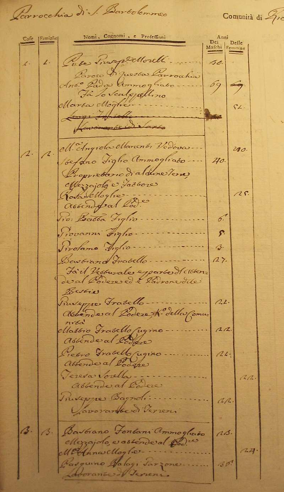
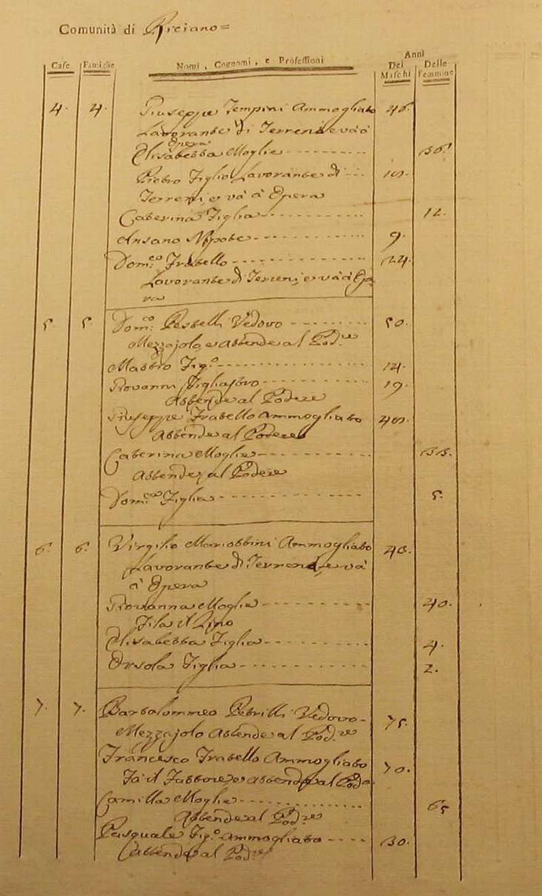
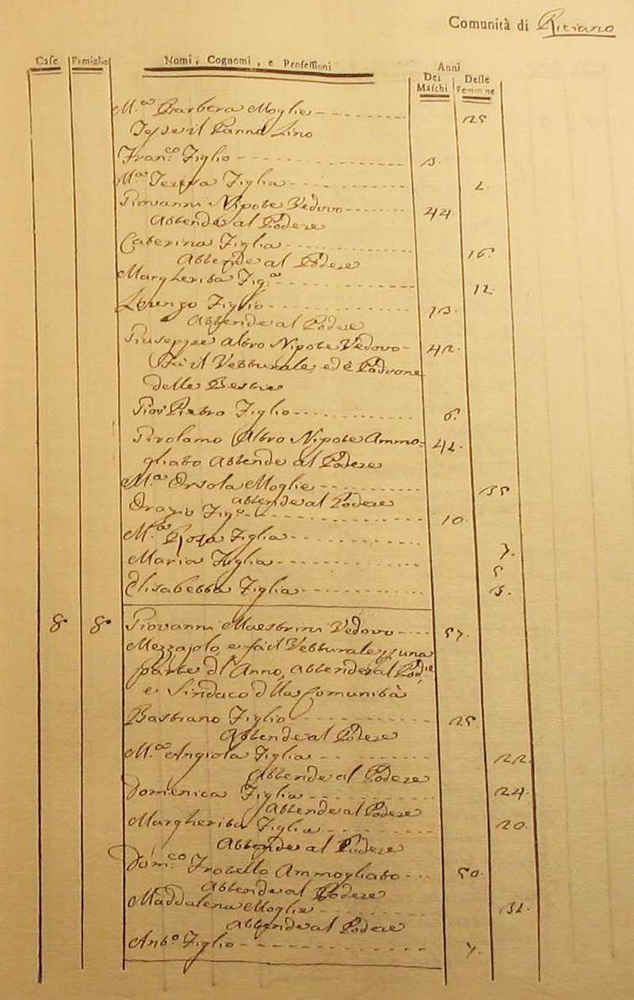
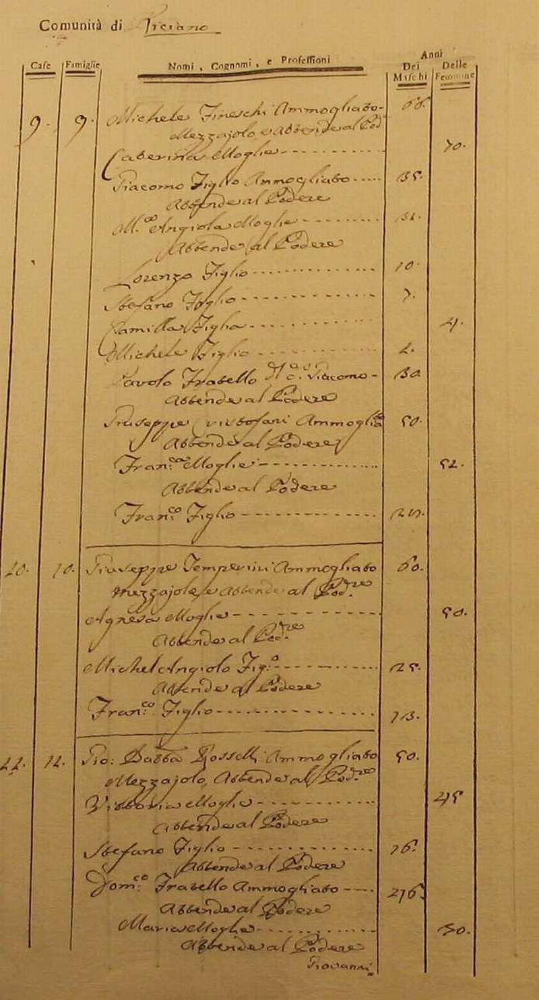
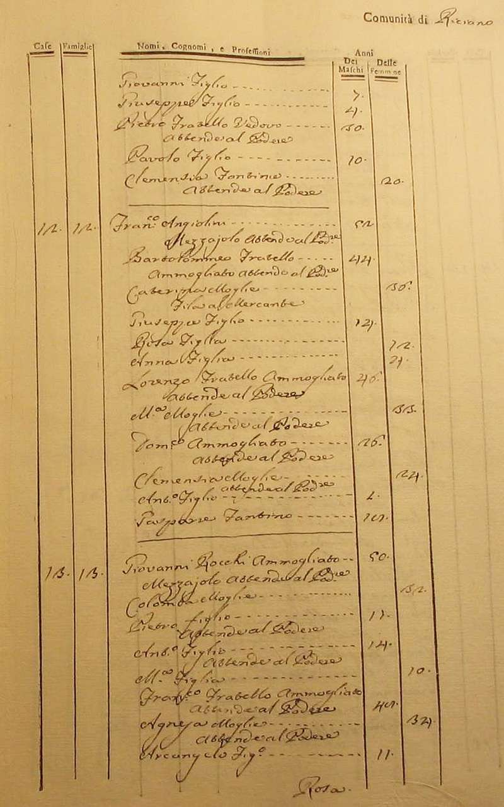
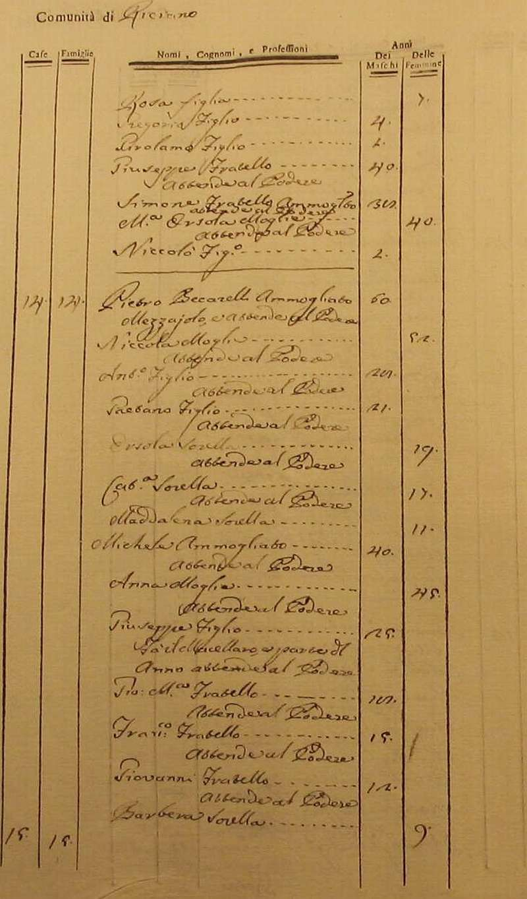
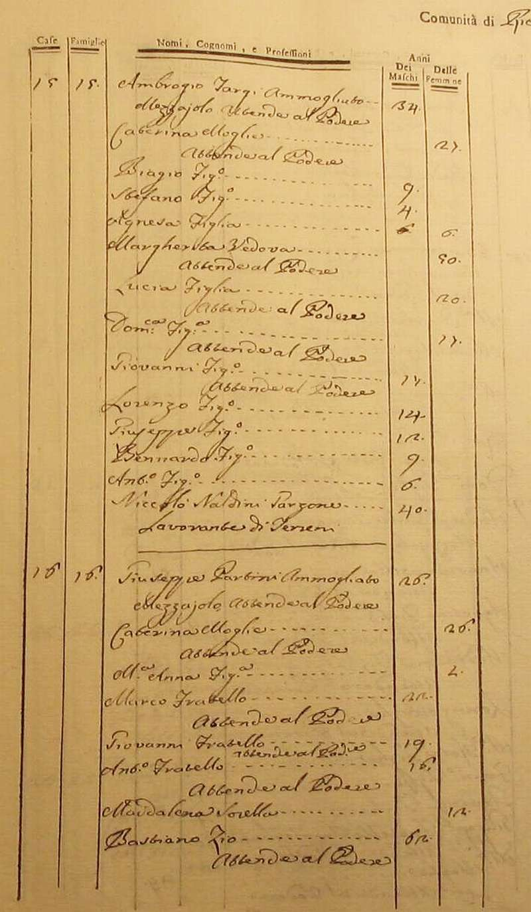
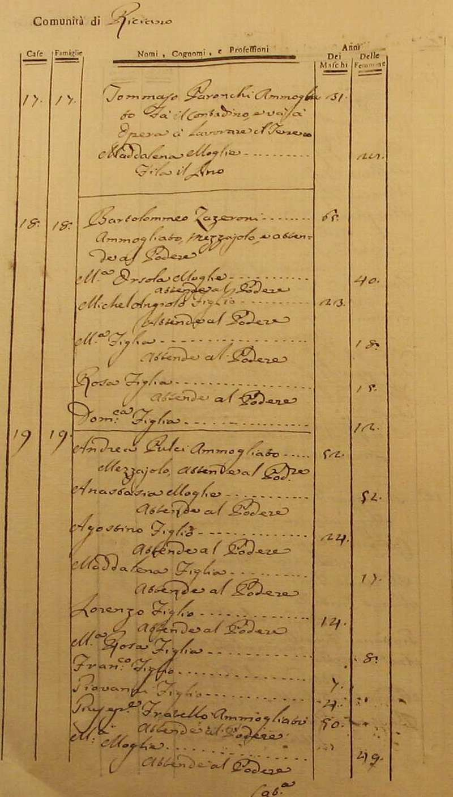
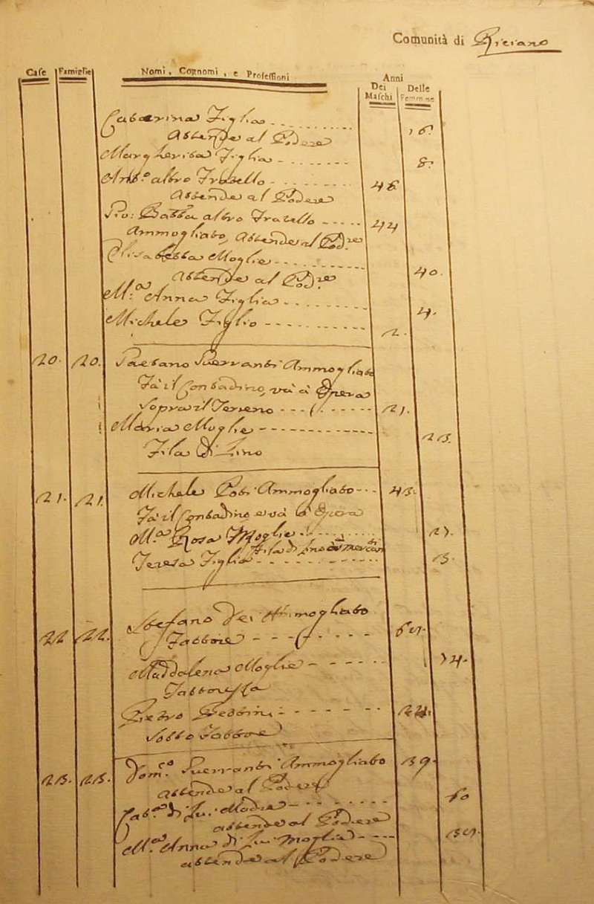
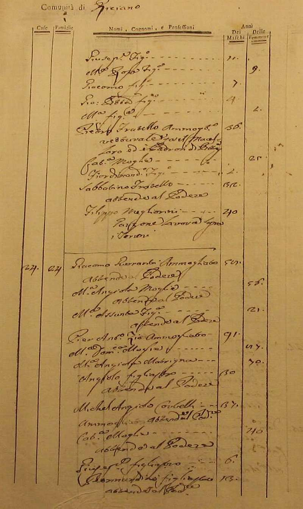
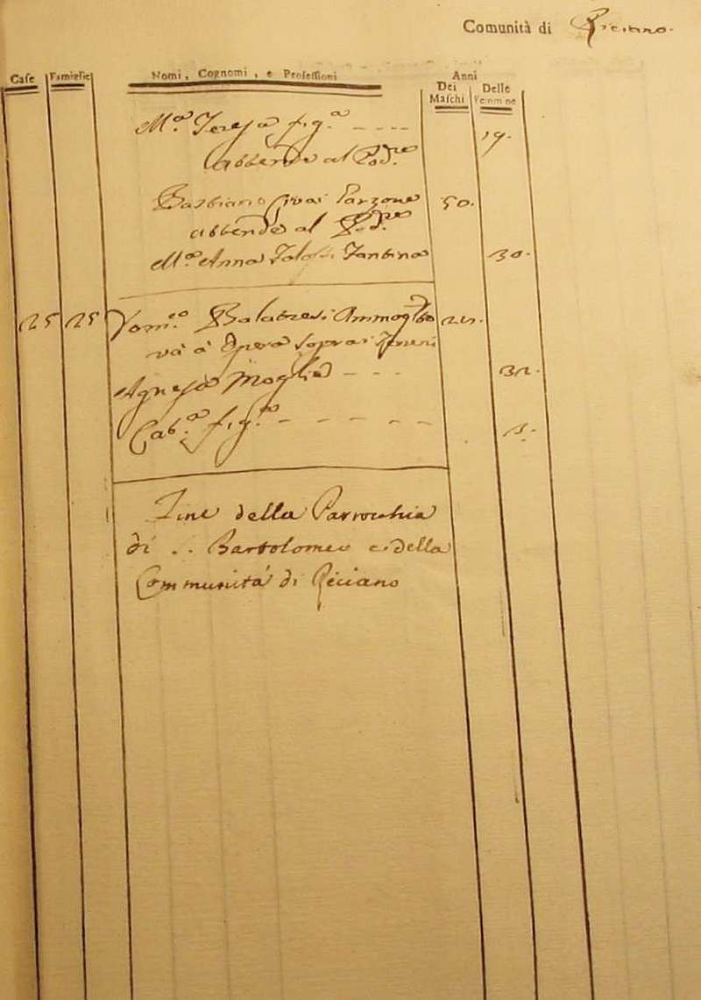
Torna ad inizio pagina
Ritorna all'indice delle parrocchie
| |

|